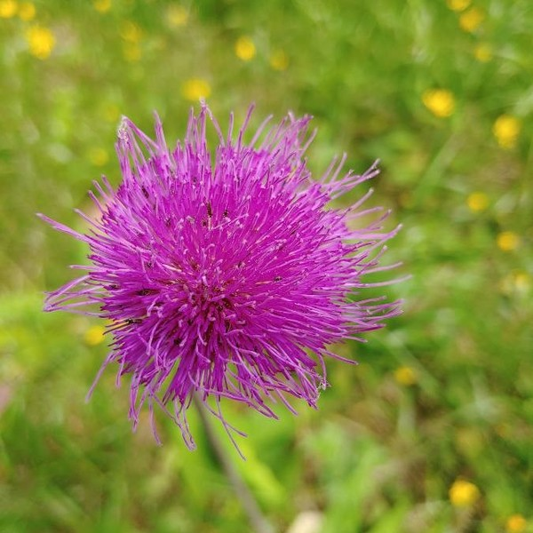
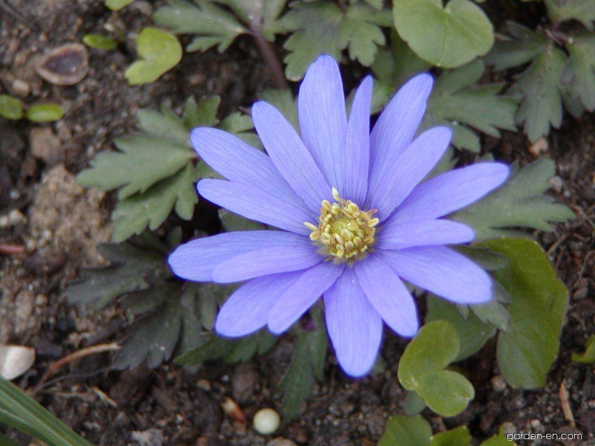
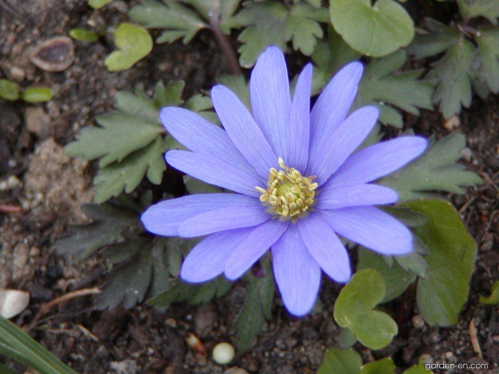
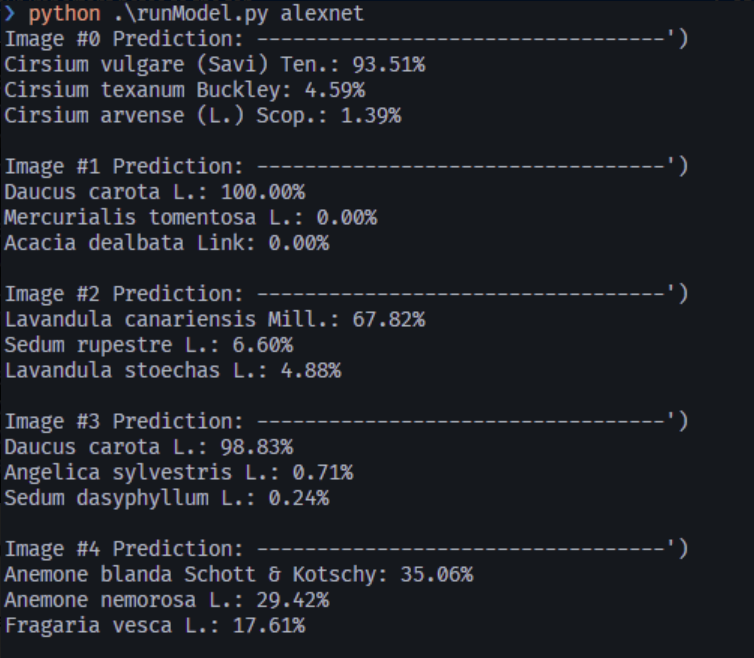
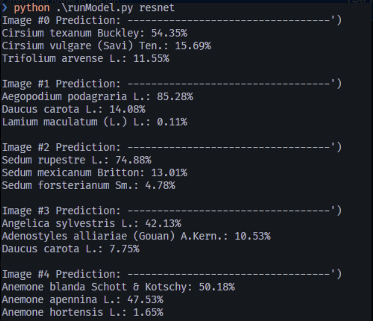
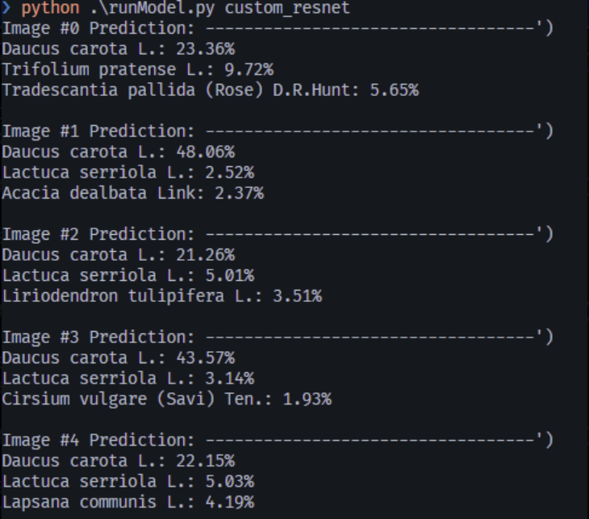

With the growth of technology people seem less connected to nature. We wanted to devise a way for people to integrate nature with their technology. We believe that educating people about plants is an easy way to get them more interested in nature. The ever-growing presence of technology in society seemingly diminishes the time that we spend exploring the wilderness. Just walking around outside, you can see parents glaring at their phones with kids strapped to strollers with an iPad in hand. In an attempt to encourage curiosity in nature, we are taking a simple approach: giving some meaning to the plants that we see every day but know nothing about. Although the model will not explain deeply what the plant one is looking at is, it attempts to invoke curiosity by attaching a name to the things we do not normally take time to absorb.
There are some solutions available to many users through apps. Some examples include PictureThis and Plantsnap. These apps use a large database to recognize many different plants with reasonable accuracy. Additionally, there are machine learning algorithms trained, for example, by the UK Centre for Ecology and Hydrology to locate invasive plant species. For this project, we considered the Pl@ntNet-300k model to be the state-of-the-art solution, as it aims to do something similar to us and has high accuracy.
Our approach to solving this problem is to build a machine learning model to evaluate an image and classify it as a plant species. At the fundamental level the way we train a model is by supplying the computer with a large set of images and and the model itself. By iterating over these images a computer can identify patterns that help classify images to a much more accurate level than a person can. We are presenting two pretrained models and their accuracy and a self trained model to show the challenges and difficulties presented in classifying plants. We used a dataset called Pl@tNet-300k, which is composed of 300,000 plant images belonging to 1081 species, to train our model.
We tested two pretrained models- ResNet and AlexNet- and our own self-trained model on a
set of five images of plants. The results varied quite a bit between the models.
AlexNet performed best by correctly identifying every image. The pretrained ResNet model
only correctly identified one image, however it was able to identify most images correctly
as a second or third option.
Our model was able to correctly identify one image.
Its inaccuracy can be explained by the time cost of training even a simple model like resnet.
We trained our model only on one epoch which took around 2-16 hours, not including the time to test
and evaluate each epoch. Ideally, we would have trained on 30 epochs which is a huge time and
resource commitment given the resources available to us. Our model prioritizes speed at the
cost of accuracy. This is more useful if one needs to quickly identify a small subset of uniquely identifiable plants.
We tested the five images below on each model.


 

We got the following results by testing the AlexNet, ResNet, and our own model on the images.
  
Since we focused on identifying species of plants, which there are thousands of, it required a very large amount of data to train the model with to correctly identify each species. If we were to redo this project, we would choose to broader classification method such as identifying a plant kingdom for the images. This would narrow down the possible number of outputs we need to be accurate for and lessen the time required to train the models. In the future, this model could be used in an app on a person's phone to allow them to easily identify plants in real life. This would a solution to the initial problem we identified in getting people to interact with nature by offering a bridge between technology and nature.